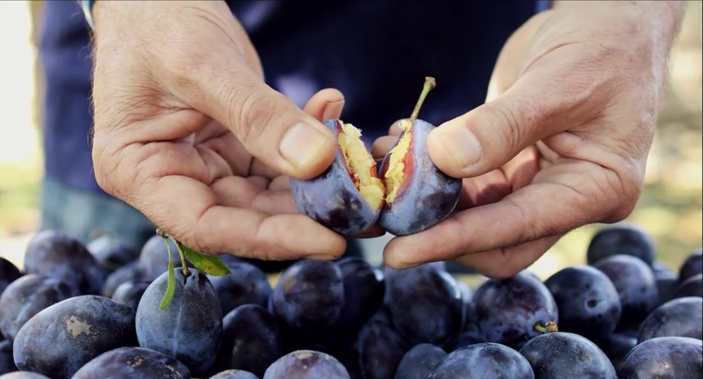
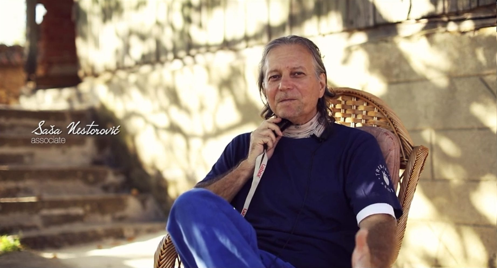
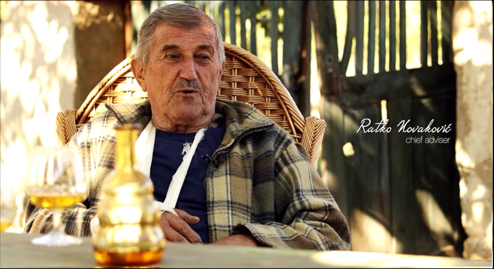

Posvećenost
Skroluj
Gde
Rakija proizvedena u srcu Srbije, u Šumadiji, poznatoj po izvornoj šljivovici i pitomim predelima. Po ljudima, po gostoprimstvu i srdačnosti.

Šta i Kako
Rakija od šljive, proizvedena uz poštovanje tradicije koja neguje kulturu dobrodošlice prema putniku namerniku kroz neskrivenu radost domaćina da je u prilici ponuditi sve najbolje što ima.

Zašto
Ima toliko ponosa i dostojanstva u činu kojim naši ljudi slave nova prijateljstva, nazdravljajući rakijom prožetom predanjem o vrhunskim vrednostima, o čestitosti i predanosti. Sa ponosom slavimo ovo nasledje kroz proces proizvodnje srpske šljivovice Skaske.
Duža verzija

Kraća verzija
